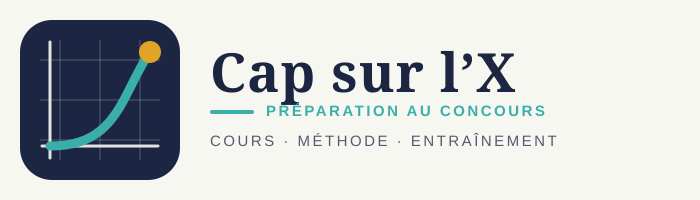
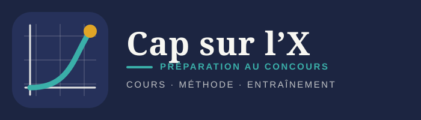
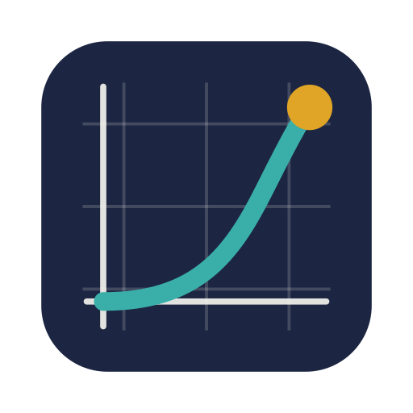
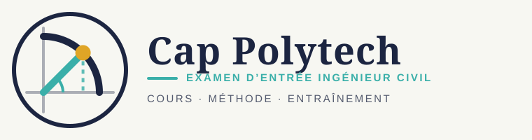
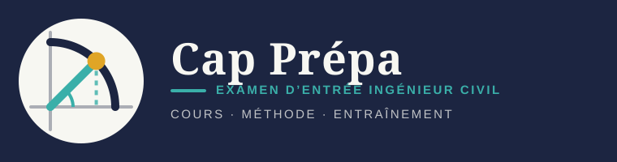
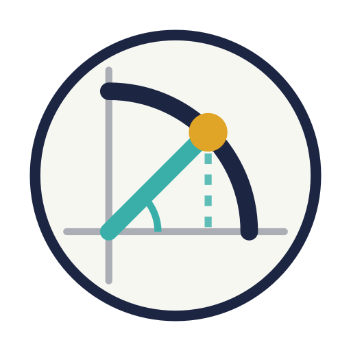
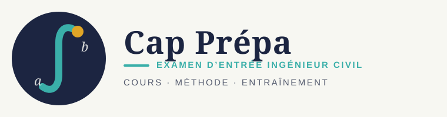
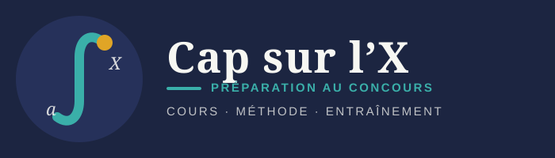
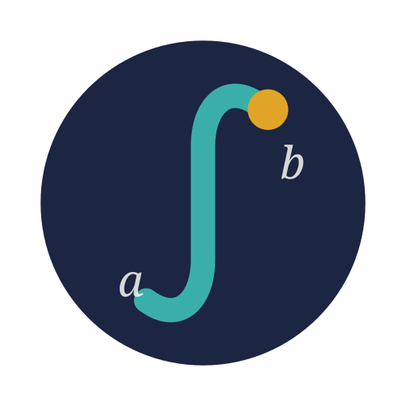

Cap Polytech — trois pistes de logo
Nom provisoire · palette : bleu nuit, turquoise, blanc cassé, ocre (accent unique)
1. Trajectoire — une courbe de progression qui atteint son objectif (point ocre)



2. Cercle trigonométrique — géométrie et trigo, au cœur de l’examen ; le point ocre marque la cible



3. L’intégrale — le chemin parcouru, de a jusqu’à b, de la rentrée jusqu’à la réussite



Bleu nuit
#1C2541
Turquoise
#3AAFA9
Blanc cassé
#F7F7F2
Ocre
#E0A526